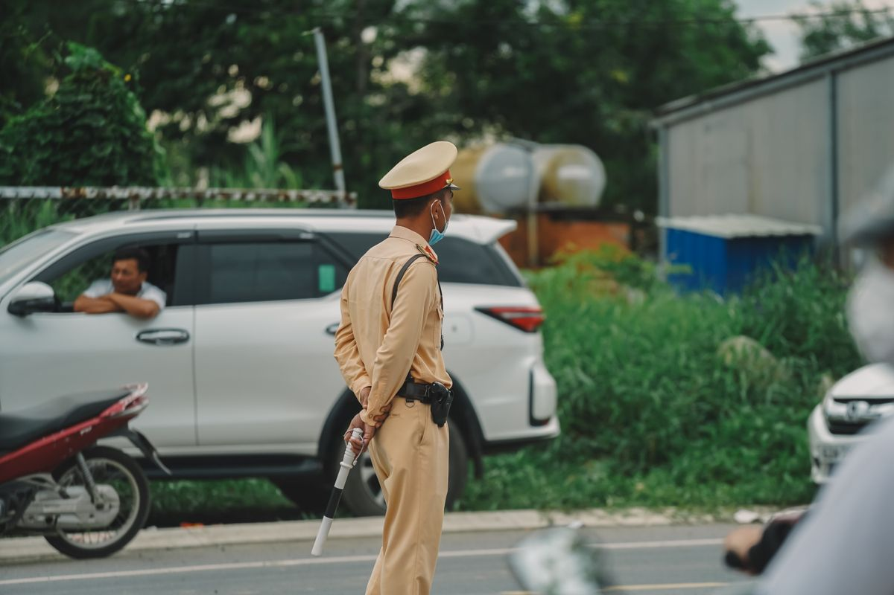
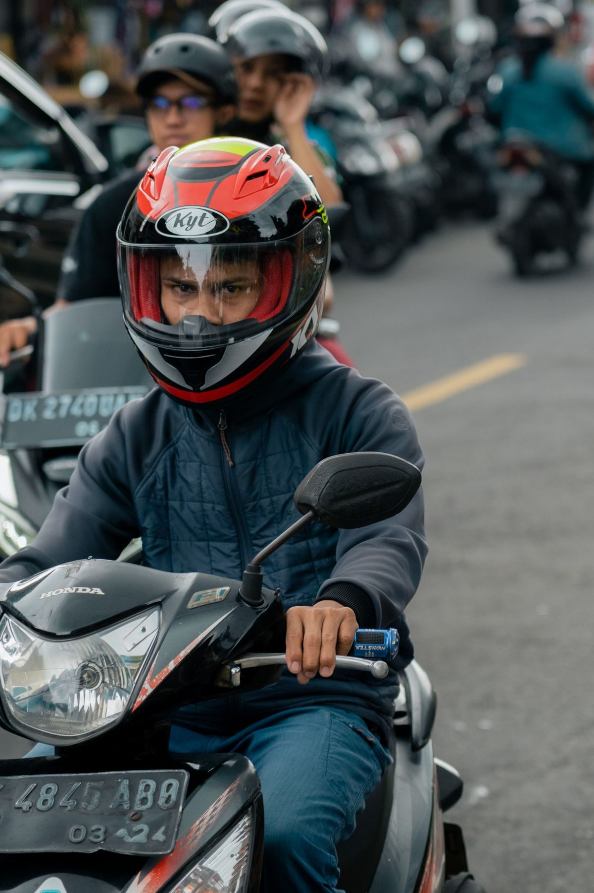
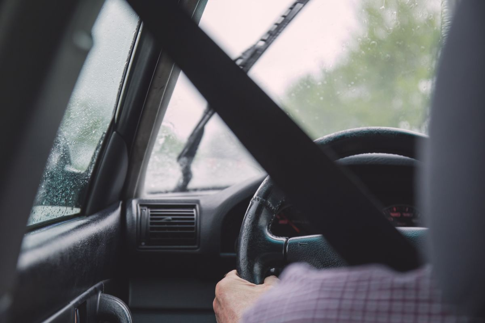

Operasi Zebra 2026 mulai Senin 16 November 2026 dan berlangsung sampai Minggu 29 November 2026, serentak di seluruh Indonesia selama 14 hari. Operasi tahunan Korlantas Polri ini mengincar sembilan pelanggaran prioritas, dari main ponsel saat berkendara sampai balap liar, dengan denda maksimal Rp250.000 sampai Rp3.000.000 menurut Undang-Undang Nomor 22 Tahun 2009, dan besaran akhirnya diputuskan hakim. Setiap daerah memakai nama sendiri, misalnya Zebra Jaya di Jakarta, Zebra Candi di Jawa Tengah, Zebra Lodaya di Jawa Barat, Zebra Krakatau di Lampung, dan Zebra Pallawa di Sulawesi Selatan. Tema tahun ini adalah Polisi Bersama Masyarakat Ciptakan Lalu Lintas Tertib, Aman, Lancar dan Berkeselamatan. Petugas mengedepankan pendekatan edukatif, persuasif, dan humanis, tapi tetap menilang pelanggaran yang membahayakan. Kalau kamu naik motor atau bawa mobil setiap hari, dua minggu ke depan adalah waktu yang tepat untuk membiasakan diri berkendara tertib.
Kapan Operasi Zebra 2026 Berlangsung dan di Mana Saja?
Operasi Zebra 2026 dimulai Senin 16 November 2026 dan berakhir Minggu 29 November 2026. Totalnya 14 hari, dan pelaksanaannya serentak di seluruh Indonesia. Kepala Korlantas Polri Brigjen Pol Aries Syahbudin menyebut operasi ini langkah awal pengamanan arus perjalanan Natal 2026 dan Tahun Baru 2027. Di Sulawesi Selatan, Polda Sulsel mengerahkan 1.600 personel, sementara Polda Lampung mengerahkan 685 personel gabungan. Operasi ini digelar menjelang libur akhir tahun, jadi sasarannya bukan cuma perilaku pengendara, tapi juga kelayakan kendaraan dan kondisi jalan. Kalau kamu berencana mudik atau liburan akhir tahun, dua minggu ini bisa dipakai untuk membiasakan diri berkendara tertib sebelum jalanan makin ramai.

Apa Saja 9 Pelanggaran yang Jadi Sasaran Operasi Zebra 2026?
Menurut petunjuk teknis Korlantas Polri, ada sembilan pelanggaran yang diawasi intensif selama operasi. Semuanya pelanggaran yang sering jadi pemicu kecelakaan fatal.
- Main ponsel saat berkendara. Mengecek pesan atau menelepon sambil menyetir mengganggu konsentrasi, dan denda maksimalnya Rp750.000.
- Tidak memakai sabuk pengaman. Berlaku untuk pengemudi dan penumpang di kursi depan mobil.
- Berkendara di bawah umur atau tanpa SIM. Anak di bawah umur dilarang mengendarai kendaraan bermotor di jalan raya, dan pengendara tanpa SIM bisa didenda maksimal Rp1.000.000.
- Bonceng lebih dari satu orang. Bonceng tiga mengubah berat dan keseimbangan motor, sehingga motor gampang oleng saat bermanuver.
- Tidak memakai helm SNI. Helm wajib dipakai pengendara dan penumpang, dan helmnya harus berstandar SNI.
- Knalpot brong. Knalpot yang tidak sesuai spesifikasi teknis jadi salah satu sasaran utama tahun ini.
- Berkendara dalam pengaruh alkohol. Alkohol memperlambat reaksi dan jadi pemicu kecelakaan fatal.
- Melawan arus. Pelanggaran ini ditindak tegas karena bisa memicu tabrakan dari depan dan kecelakaan beruntun.
- Balap liar. Ini pelanggaran yang paling keras ditindak, dengan ancaman denda maksimal Rp3.000.000, dan besaran akhirnya diputuskan hakim.

Berapa Denda Maksimal Tiap Pelanggaran?
Semua denda di bawah ini adalah denda maksimal menurut Undang-Undang Nomor 22 Tahun 2009 tentang Lalu Lintas dan Angkutan Jalan. Nominal yang akhirnya kamu bayar bisa lebih rendah, karena besaran denda diputuskan hakim di pengadilan, bukan ditentukan petugas di lapangan.
- Main ponsel saat berkendara: denda maksimal Rp750.000 (Pasal 283).
- Melawan arus: denda maksimal Rp500.000 (Pasal 287 ayat 1).
- Tidak memakai helm SNI: denda maksimal Rp250.000 (Pasal 291).
- Tidak memakai sabuk pengaman: denda maksimal Rp250.000 (Pasal 289).
- Tanpa SIM: denda maksimal Rp1.000.000 (Pasal 281).
- Knalpot tidak sesuai spesifikasi: denda maksimal Rp250.000 (Pasal 285 ayat 1).
- Balap liar: denda maksimal Rp3.000.000 (Pasal 297).
Dua pelanggaran lain dari daftar di atas, bonceng lebih dari satu orang dan berkendara dalam pengaruh alkohol, tidak dicantumkan nominal dendanya di sumber yang dipakai artikel ini, jadi nominalnya tidak ditulis di sini. Perlu diingat, tilang elektronik (ETLE) juga jalan selama operasi. Pelanggaran yang terekam kamera bisa dicek lewat portal konfirmasi ETLE di konfirmasi-etle.polri.go.id, dan batas konfirmasinya delapan hari sejak pelanggaran terjadi.
Apa yang Harus Kamu Siapkan Sebelum Berkendara?
Operasi Zebra bukan razia dadakan yang harus ditakuti, tapi pengingat untuk membenahi kebiasaan berkendara. Sebelum keluar rumah, cek lima hal ini:
- SIM dan STNK masih berlaku dan dibawa.
- Helm SNI dipakai dengan benar, talinya dikencangkan.
- Sabuk pengaman dipakai sebelum mobil jalan.
- Ponsel disimpan, bukan dipegang. Kalau harus membalas pesan, menepi dulu.
- Knalpot standar dan spion lengkap, terutama kalau motormu pernah dimodifikasi.
Kalau kamu terkena tilang, jangan berdebat di jalan dan jangan tawarkan uang damai. Minta surat tilangnya, catat nomornya, lalu urus sesuai prosedur.

Operasi Zebra 2026 berlangsung sampai 29 November 2026. Dua minggu ini waktu yang pas untuk membiasakan diri tertib di jalan, bukan cuma supaya lolos tilang, tapi supaya kamu dan pengguna jalan lain selamat sampai tujuan. Periksa SIM, STNK, helm, dan knalpotmu hari ini, sebelum petugas yang memeriksanya.
Sumber dan Info Resmi
Angka dan tanggal di artikel ini merujuk ke sumber berikut:
- Fakta Kalbar: jadwal 16 sampai 29 November 2026, serentak di seluruh Indonesia; nama daerah Zebra Jaya, Zebra Candi, Zebra Lodaya, dan Zebra Krakatau; Kakorlantas Polri Brigjen Pol Aries Syahbudin.
- Lensa Indo: knalpot brong dan balap liar jadi sasaran utama; Polda Lampung mengerahkan 685 personel gabungan; langkah awal pengamanan Nataru.
- Lantas.info: 16 sampai 29 November 2026, 1.600 personel Polda Sulsel, denda maksimal balap liar Rp3.000.000.
- Kompak News: tema operasi Polisi Bersama Masyarakat Ciptakan Lalu Lintas Tertib, Aman, Lancar dan Berkeselamatan.
- Inforkampus: 9 pelanggaran prioritas menurut petunjuk teknis Korlantas Polri; pendekatan edukatif, persuasif, dan humanis, plus ETLE.
- Koran Kota: denda maksimal UU 22/2009 untuk ponsel Rp750.000, helm SNI Rp250.000, sabuk pengaman Rp250.000, dan lawan arus Rp500.000.
- Auto2000: denda maksimal UU 22/2009 untuk tanpa SIM Rp1.000.000 dan knalpot tidak sesuai spesifikasi Rp250.000.
- Media Sharing: portal konfirmasi ETLE di konfirmasi-etle.polri.go.id; batas konfirmasi 8 hari sejak pelanggaran.
- BSI News: denda maksimal balap liar Rp3.000.000, besaran akhir diputuskan hakim.